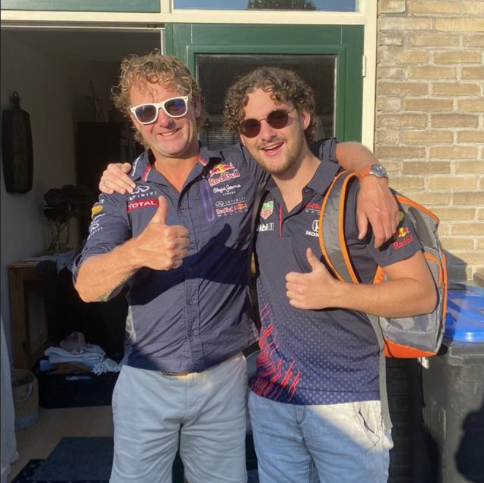

- 
Wie? Ruben, Luca en Tion, drie jongvolwassenen. Wat? The life road, een podcast gemaakt voor jongvolwassenen, door jongvolwassenen waarin leeftijdsgenoten hun ervaringen en visie geven op persoonlijke zaken, en hoe wij ze aanpakken. Waar? Wij wonen in Noord-Holland en zal daarom besproken worden met ervaringen vanuit die beleving. Waarom? wij willen onze leeftijdsgenoten manieren vertellen waarop jemeer zelfvoldoening ervaart. er is een groot aandeel van mensen van onze leeftijd die met diepgaande vragen zitten over mentale gezondheid, carriere fysieke gezondheid en welzijn. Hoe? Wij vertellen over onze eraringen en belevinge, en daarbij gaan we in discussie met onze gasten die exports zijn op het gebied van specefieke subonderwerpen die onder het hoofdonderwerp " zelfontwikkeling" vallen.